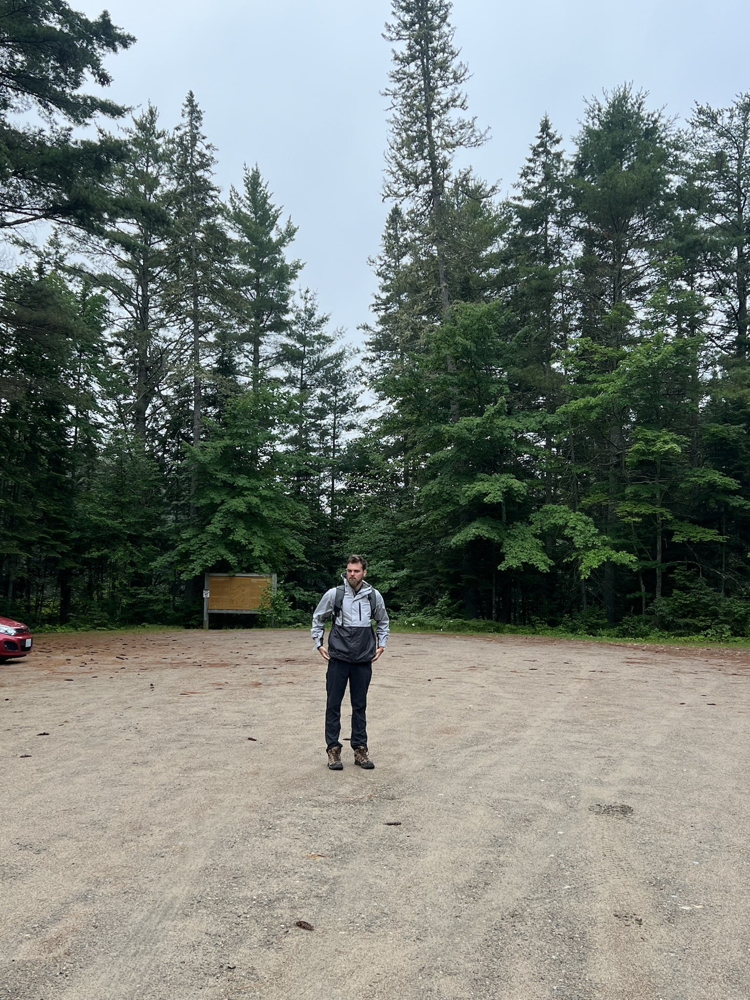
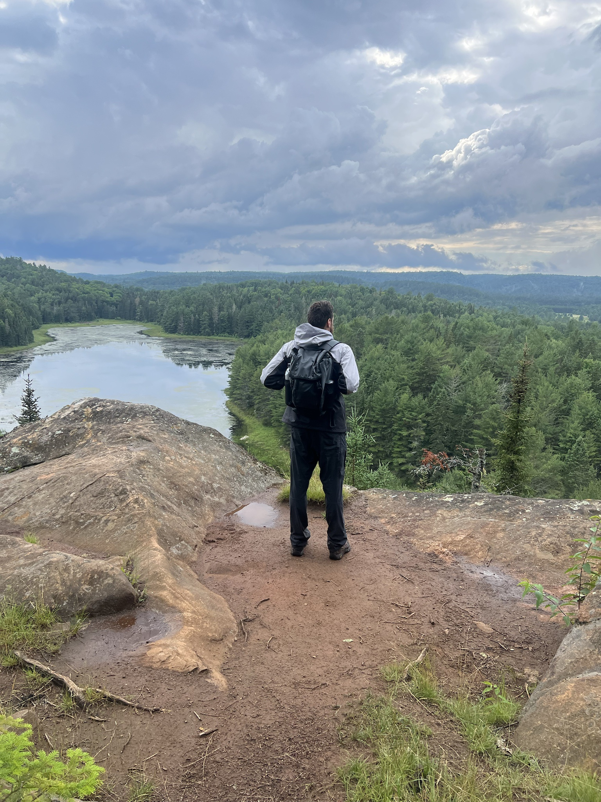

Hi, I’m Andrew
This blog is where I post about my programming experiences and other topics that catch my interest. It also contains a list of my publications. It runs on a custom Nord-IDE-based theme I’m developing, called “Baltic”.
More about me
I’ve been working as a software developer since I was 18 (going back to school for a BS-CS at 21). I primarily work with C++, PHP, JavaScript, and SQL. However, I’ve done smaller projects with a wide variety of languages including Rust, C, Haskell, Python, R, COBOL, and IBM ILE languages (DDS, RPG, CL), among others.
Outside of work, I spend a lot of time hiking, browsing hacker news, watching Formula 1, and frequenting my local Cars and Coffee events.

Want to get in touch? Feel free to contact me through LinkedIn.